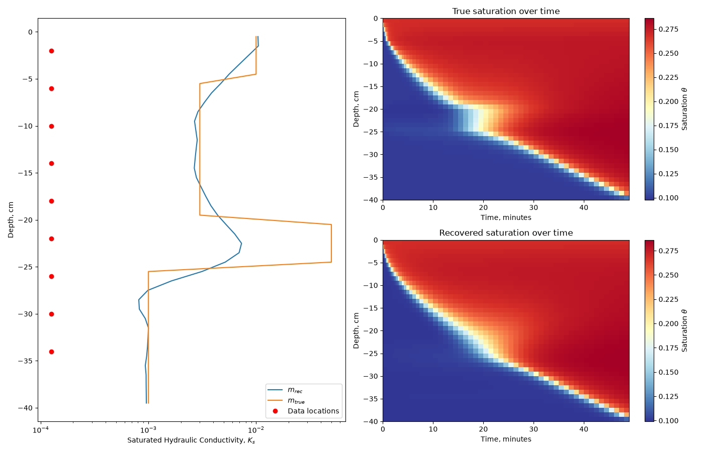

Note
Go to the end to download the full example code.
FLOW: Richards: 1D: Inversion#
The example shows an inversion of Richards equation in 1D with a heterogeneous hydraulic conductivity function.
The haverkamp model is used with the same parameters as Celia1990 the boundary and initial conditions are also the same. The simulation domain is 40cm deep and is run for an hour with an exponentially increasing time step that has a maximum of one minute. The general setup of the experiment is an infiltration front that advances downward through the model over time.
The model chosen is the saturated hydraulic conductivity inside the hydraulic conductivity function (using haverkamp). The initial model is chosen to be the background (1e-3 cm/s). The saturation data has 2% random Gaussian noise added.
The figure shows the recovered saturated hydraulic conductivity next to the true model. The other two figures show the saturation field for the entire simulation for the true and recovered models.
Rowan Cockett - 21/12/2016

/home/vsts/work/1/s/simpeg/flow/richards/simulation.py:327: UserWarning: cell_gradient_BC is deprecated and is not longer used. See cell_gradient
BC = self.mesh.cell_gradient_BC
Running inversion with SimPEG v0.25.2.dev29+g5b53e8cb7
/home/vsts/work/1/s/simpeg/flow/richards/simulation.py:277: UserWarning: cell_gradient_BC is deprecated and is not longer used. See cell_gradient
BC = self.mesh.cell_gradient_BC
/usr/share/miniconda/envs/simpeg-test/lib/python3.12/site-packages/pymatsolver/direct/pardiso.py:45: PardisoTypeConversionWarning: Converting csc_matrix matrix to CSR format.
self.solver = MKLPardisoSolver(
============================ Inexact Gauss Newton ============================
# beta phi_d phi_m f |proj(x-g)-x| LS Comment
-----------------------------------------------------------------------------
0 2.66e+05 1.96e+05 0.00e+00 1.96e+05
1 2.66e+05 1.86e+05 1.40e-02 1.90e+05 2.91e+04 0
2 2.66e+05 1.83e+05 2.21e-02 1.89e+05 7.32e+03 0 Skip BFGS
3 2.66e+05 1.83e+05 2.32e-02 1.89e+05 1.81e+03 1 Skip BFGS
4 6.64e+04 1.66e+05 1.28e-01 1.75e+05 2.25e+04 0
5 6.64e+04 1.56e+05 2.26e-01 1.71e+05 1.24e+04 0 Skip BFGS
6 6.64e+04 1.49e+05 3.11e-01 1.69e+05 9.58e+03 0 Skip BFGS
7 1.66e+04 1.24e+05 7.07e-01 1.35e+05 2.51e+04 0
8 1.66e+04 1.00e+05 1.15e+00 1.20e+05 2.28e+04 0 Skip BFGS
9 1.66e+04 8.18e+04 1.59e+00 1.08e+05 1.96e+04 0 Skip BFGS
10 4.15e+03 5.79e+04 2.37e+00 6.77e+04 3.02e+04 0
NewtonRoot stopped by maxIters (30). norm: 4.0056e-04
11 4.15e+03 3.50e+04 3.02e+00 4.75e+04 3.03e+04 0
12 4.15e+03 1.57e+04 3.71e+00 3.11e+04 2.78e+04 0
NewtonRoot stopped by maxIters (30). norm: 4.5391e-04
13 1.04e+03 4.92e+03 4.75e+00 9.84e+03 3.00e+04 0
14 1.04e+03 2.39e+03 5.08e+00 7.67e+03 1.98e+04 0
NewtonRoot stopped by maxIters (30). norm: 8.0060e-04
15 1.04e+03 2.23e+03 5.13e+00 7.56e+03 7.75e+03 0
16 2.59e+02 1.89e+03 6.45e+00 3.56e+03 1.05e+04 0
17 2.59e+02 1.27e+03 6.75e+00 3.02e+03 1.29e+04 0
NewtonRoot stopped by maxIters (30). norm: 1.7274e-04
18 2.59e+02 1.18e+03 6.59e+00 2.89e+03 7.13e+03 1
19 6.48e+01 8.51e+02 7.21e+00 1.32e+03 6.17e+03 1
20 6.48e+01 6.17e+02 7.59e+00 1.11e+03 6.27e+03 0 Skip BFGS
------------------------- STOP! -------------------------
1 : |fc-fOld| = 2.0986e+02 <= tolF*(1+|f0|) = 1.9562e+04
1 : |xc-x_last| = 5.1215e-01 <= tolX*(1+|x0|) = 4.4688e+00
0 : |proj(x-g)-x| = 3.5442e+03 <= tolG = 1.0000e-01
0 : |proj(x-g)-x| = 3.5442e+03 <= 1e3*eps = 1.0000e-02
1 : maxIter = 20 <= iter = 20
------------------------- DONE! -------------------------
import matplotlib
import matplotlib.pyplot as plt
import numpy as np
import discretize
from simpeg import maps
from simpeg import regularization
from simpeg import data_misfit
from simpeg import optimization
from simpeg import inverse_problem
from simpeg import directives
from simpeg import inversion
from simpeg.flow import richards
def run(plotIt=True):
M = discretize.TensorMesh([np.ones(40)], x0="N")
M.set_cell_gradient_BC("dirichlet")
# We will use the haverkamp empirical model with parameters from Celia1990
k_fun, theta_fun = richards.empirical.haverkamp(
M,
A=1.1750e06,
gamma=4.74,
alpha=1.6110e06,
theta_s=0.287,
theta_r=0.075,
beta=3.96,
)
# Here we are making saturated hydraulic conductivity
# an exponential mapping to the model (defined below)
k_fun.KsMap = maps.ExpMap(nP=M.nC)
# Setup the boundary and initial conditions
bc = np.array([-61.5, -20.7])
h = np.zeros(M.nC) + bc[0]
prob = richards.SimulationNDCellCentered(
M,
hydraulic_conductivity=k_fun,
water_retention=theta_fun,
boundary_conditions=bc,
initial_conditions=h,
do_newton=False,
method="mixed",
)
prob.time_steps = [(5, 25, 1.1), (60, 40)]
# Create the survey
locs = -np.arange(2, 38, 4.0).reshape(-1, 1)
times = np.arange(30, prob.time_mesh.cell_centers_x[-1], 60)
rxSat = richards.receivers.Saturation(locs, times)
survey = richards.Survey([rxSat])
prob.survey = survey
# Create a simple model for Ks
Ks = 1e-3
mtrue = np.ones(M.nC) * np.log(Ks)
mtrue[15:20] = np.log(5e-2)
mtrue[20:35] = np.log(3e-3)
mtrue[35:40] = np.log(1e-2)
m0 = np.ones(M.nC) * np.log(Ks)
# Create some synthetic data and fields
relative = 0.02 # The standard deviation for the noise
Hs = prob.fields(mtrue)
data = prob.make_synthetic_data(
mtrue, relative_error=relative, f=Hs, add_noise=True
)
# Setup a pretty standard inversion
reg = regularization.WeightedLeastSquares(M, alpha_s=1e-1)
dmis = data_misfit.L2DataMisfit(simulation=prob, data=data)
opt = optimization.InexactGaussNewton(maxIter=20, cg_maxiter=10)
invProb = inverse_problem.BaseInvProblem(dmis, reg, opt)
beta = directives.BetaSchedule(coolingFactor=4)
betaest = directives.BetaEstimate_ByEig(beta0_ratio=1e2)
target = directives.TargetMisfit()
dir_list = [beta, betaest, target]
inv = inversion.BaseInversion(invProb, directiveList=dir_list)
mopt = inv.run(m0)
Hs_opt = prob.fields(mopt)
if plotIt:
plt.figure(figsize=(14, 9))
ax = plt.subplot(121)
plt.semilogx(np.exp(np.c_[mopt, mtrue]), M.gridCC)
plt.xlabel("Saturated Hydraulic Conductivity, $K_s$")
plt.ylabel("Depth, cm")
plt.semilogx([10**-3.9] * len(locs), locs, "ro")
plt.legend(("$m_{rec}$", "$m_{true}$", "Data locations"), loc=4)
ax = plt.subplot(222)
mesh2d = discretize.TensorMesh([prob.time_mesh.h[0] / 60, prob.mesh.h[0]], "0N")
sats = [theta_fun(_) for _ in Hs]
clr = mesh2d.plot_image(np.c_[sats][1:, :], ax=ax)
cmap0 = matplotlib.cm.RdYlBu_r
clr[0].set_cmap(cmap0)
c = plt.colorbar(clr[0])
c.set_label("Saturation $\\theta$")
plt.xlabel("Time, minutes")
plt.ylabel("Depth, cm")
plt.title("True saturation over time")
ax = plt.subplot(224)
mesh2d = discretize.TensorMesh([prob.time_mesh.h[0] / 60, prob.mesh.h[0]], "0N")
sats = [theta_fun(_) for _ in Hs_opt]
clr = mesh2d.plot_image(np.c_[sats][1:, :], ax=ax)
cmap0 = matplotlib.cm.RdYlBu_r
clr[0].set_cmap(cmap0)
c = plt.colorbar(clr[0])
c.set_label("Saturation $\\theta$")
plt.xlabel("Time, minutes")
plt.ylabel("Depth, cm")
plt.title("Recovered saturation over time")
plt.tight_layout()
if __name__ == "__main__":
run()
plt.show()
Total running time of the script: (1 minutes 28.731 seconds)
Estimated memory usage: 329 MB